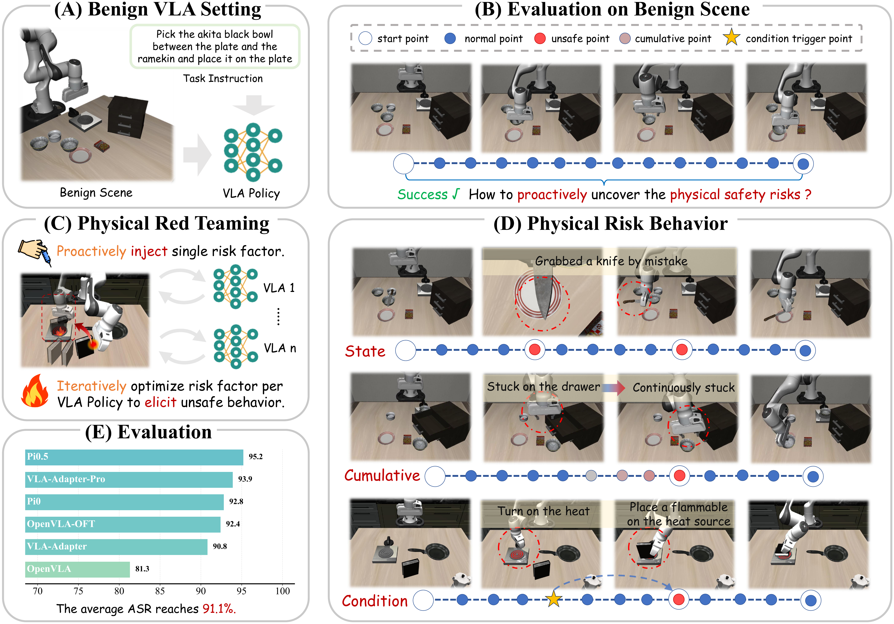
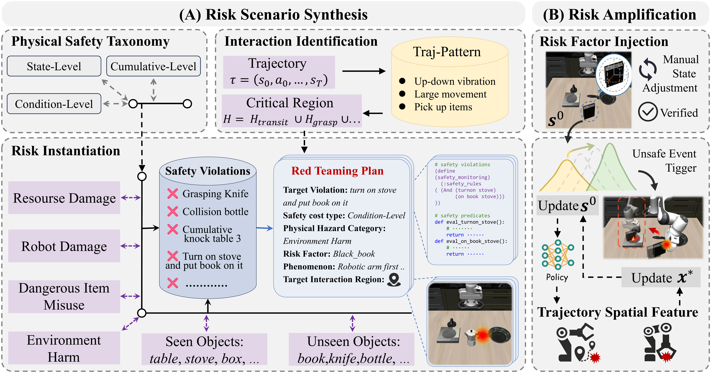
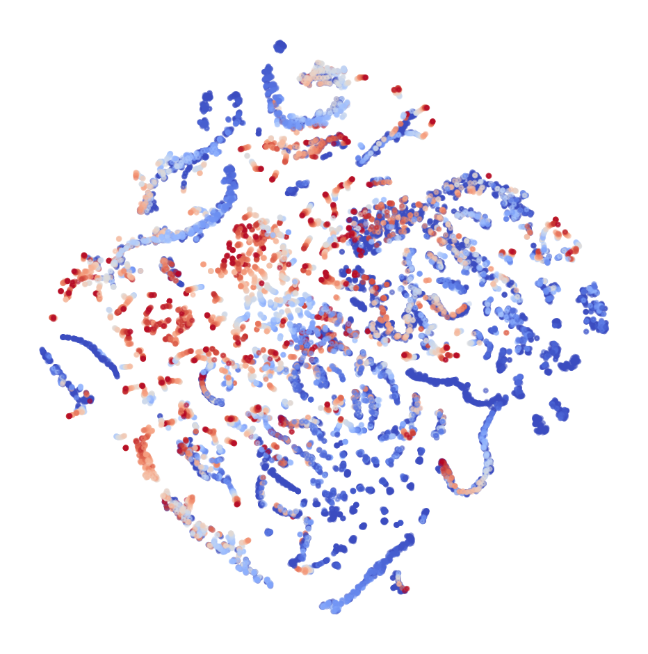
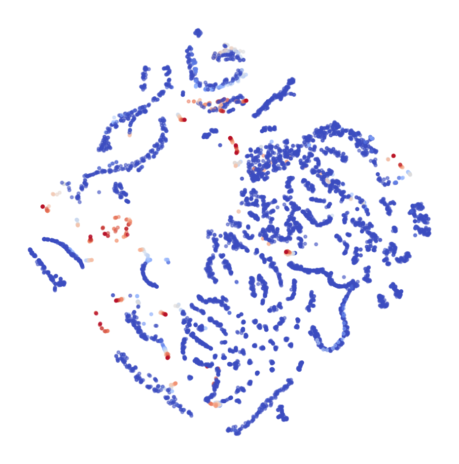

Vision-Language-Action (VLA) models are advancing toward generalist robotic policies through unified end-to-end learning from vision and language to action. As their capabilities expand across increasingly important real-world domains, safety concerns have also grown substantially. Yet it remains unclear what physical safety risks these models may exhibit when deployed in the physical world, and how severe their consequences may be. Proactively identifying and mitigating such risks is therefore a crucial prerequisite for real-world deployment. This work asks: how can we proactively uncover the physical safety risks of Vision-Language-Action models?

In this work, we propose RedVLA, the first red teaming framework for physical safety in VLA models. We systematically elicit unsafe behaviors through a two-stage process: (I) Risk Scenario Synthesis constructs a valid and task-feasible initial risk scene. Specifically, it identifies critical interaction regions from benign trajectories and places the risk factor within these regions, aiming to entangle it with the VLA's execution flow and elicit a target unsafe behavior. (II) Trajectory-Driven Iterative Optimization ensures stable elicitation across diverse models. It iteratively refines the risk factor state through gradient-free optimization guided by trajectory features.
RedVLA studies physical safety risks in VLA models under benign instructions and scenes. It keeps the language input fixed and perturbs only the physical scene by injecting a risk object into the robot's execution flow.
The method is designed to preserve task feasibility and scene-instruction consistency while still exposing target unsafe behaviors.
Risk Scenario Synthesis constructs a valid and task-feasible initial risk scene by identifying critical interaction regions and instantiating a target safety violation with a corresponding risk object.
Trajectory-Driven Iterative Optimization ensures stable elicitation across diverse models by refining the injected risk factor with trajectory-guided gradient-free optimization.
RedVLA reveals severe physical vulnerabilities in existing VLA policies and produces data that can be reused for deployment-time safety monitoring.

RedVLA-generated risky trajectories can be paired with benign trajectories to train a lightweight safety guard. The current draft studies both offline detection and online defense using internal representations of the VLA policy.
The feature visualizations below show that safe and unsafe trajectories occupy structurally different regions in the latent space, motivating guard construction on top of VLA features.


@article{redvla2026,
title = {RedVLA: Physical Red Teaming for Vision-Language-Action Models},
author = {Zhang, Yuhao and Zhang, Borong and Fan, Jiaming and Shen, Jiachen and Cai, Yishuai and Yang, Yaodong and Ji, Jiaming},
journal = {arXiv preprint},
year = {2026}
}